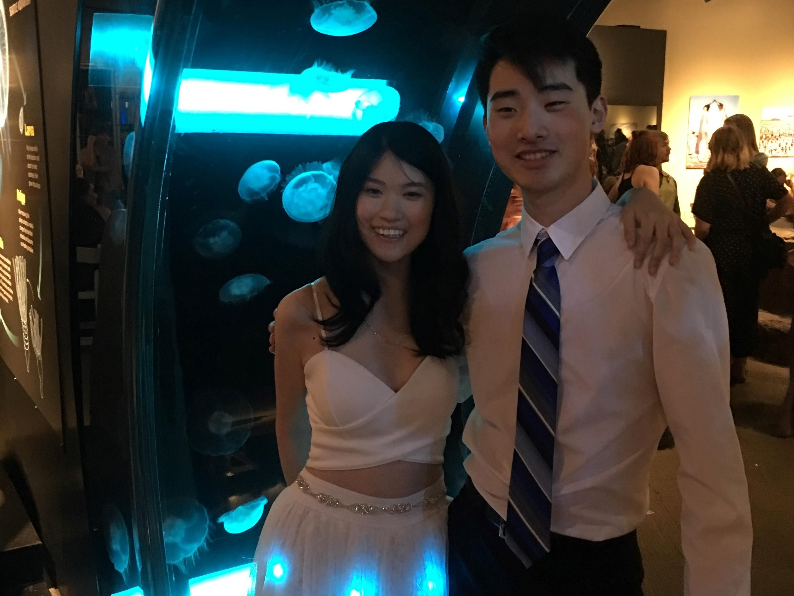
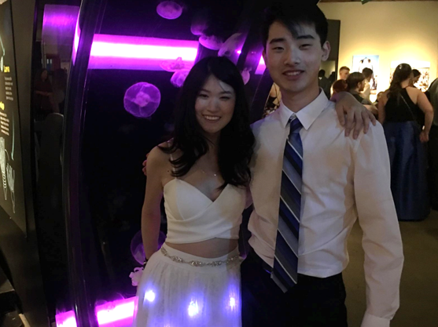

For senior prom, I added individually programmable lights to my prom dress in order to create a dress that could truly light up a room. This project had two parts: one was a sewable Adafruit Flora module attached to many different sewable LED lights, and another was a sewable Bluetooth Low Energy module. At the end of the day, any color could be chosen to display from any phone via a bluetooth connection.